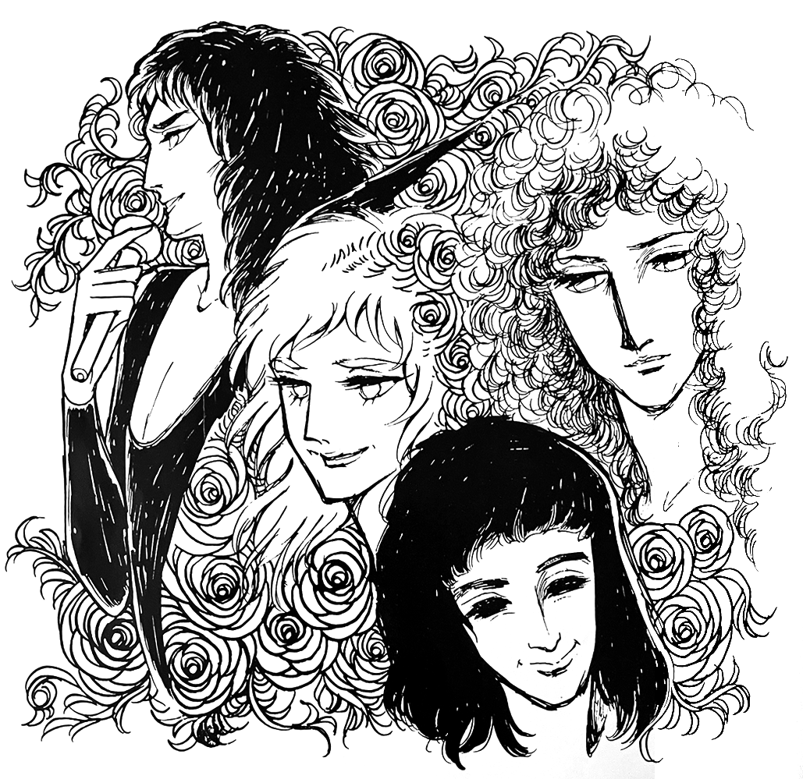

News of the Queen

By the way, do you know how old the members of Queen are? John was born in 1951, the year of the Rabbit. Wow, he fits that image perfectly! Freddie was born in 1946, so he's a Rooster. Hmm, very cunning! Brian is a Tiger, having been born in 1947. And Roger is an Ox!
January 4th, 1979... do you know the significance of this date? January 4th of next year...I bet you don't know. It's the 10,000th day since John was born. Mr. S from the main office calculated it in his spare time. What a bored guy! When will your 10,000th day be?
Alright now, enough of that nonsense... let's move on to some Queen news! They finished their US tour on December 22nd last year, after which they returned home to England and went on a break. As of the end of January, their schedule has still not been announced. They're at the stage where they're considering what they want to do next, but they're not at a point where they can make any announcements yet. Last year was a busy year for them, so I guess it'd be good for them to take some time off for a while.
It has not yet been decided when they'll be returning to Japan. The rumors in magazines are just that—rumors. The promoter for the past two tours in Japan was World Leisure, a subsidiary of Watanabe Productions (Nabepro). But starting last year, Queen's promotion has been taken over by Watanabe Enterprises, a different subsidiary of Nabepro. Recently, Misa Watanabe, the vice president of Nabepro, received a painting from John Reid and some skin powder from Freddie. In light of this, maybe this year will be the year for Queen's third Japanese visit.
We Are The Champions is slowly climbing the charts. In Japan, it quickly gained popularity after its release and quickly rose to the top, but in the US and UK it gradually entered the charts around November of last year and has been climbing little by little ever since. It's currently in the top 10 and still going... it's only a matter of time until it's number one. The music video for it is now showing on Ginza NOW and other TV channels. This video was shot on October 6th of last year, with a sudden gathering of fans. 900 or so people lined up outside the New London Theater in Drury Lane from early in the morning that day, and there were delays with checking the equipment so it was a bit different from a normal concert. First, the record We Are The Champions was played several times, allowing the audience to get used to the song. Then the band came onstage and performed it seven or eight times, because the person filming wanted to get shots from various angles. Once filming was finished, they played about ten songs for the people gathered: Tie Your Mother Down, Somebody to Love, White Man, Bohemian Rhapsody, Keep Yourself Alive, Liar, etc. And for the encore, they played See What A Fool I've Been, which hasn't been released in Japan. How envious I am!
I wonder if they'll make a video in Japan someday. There was another camera rolling onstage, and this was the production team behind the documentary that aired on British TV in January. I wonder if that will be aired in Japan at some point. Maybe I should ask NHK.
Dedicated to the World [the Japanese title of 'News of the World'] also seems to be well-received, so everything is going swimmingly. By the way, you may know that the original English title, "News of the World", is the name of a British newspaper, but do you know what kind of paper it is? According to the encyclopedia, it's a "massively distributed Sunday newspaper in the UK. It's known for its sensationalism, with many articles about sex and crime. It has a circulation of 5.23 million". I don't have any actual copies with me yet, so I can't say for myself, but judging by this description it sounds like a tabloid.
Do you know what became of that song that Freddie produced, Eddie Howell's Man from Manhattan? He's apparently released two albums in the UK. Freddie doesn't seem to have influenced the sound at all, apart from the aforementioned single. There aren't any plans to release it Japan.
As for Peter Straker, I dont know much about him, but the other day I bought I Robot by the Alan Parsons Project, and he was listed in the vocal credits. I think it's a masterpiece of a record and one of the best albums of last year. What do you think?
Now, finally, here's a quiz for you: As you know, the members of Queen lived in Kensington in the early days (near Hyde Park, where they later held their free concert). There's a famous fairytale that begins in Kensington. Can you guess the name? Probably not. The correct answer is "Peter Pan". PII-TAA PANNN...Wow... what a mouthful!
See you at the spring fan gathering. Bye.
—Inouye